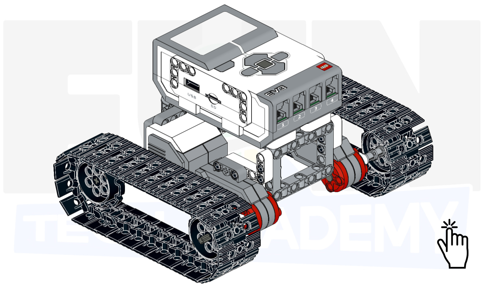

Hoy toca montar un vehículo de tipo tanque.

El tanque será un vehículo que se moverá con las bandas de rodamiento construidas con las piezas. Tendrá dos
motores, uno para cada lado, que moverá una banda cada uno.
Vamos a hacer dos partes también de este proyecto. La primera parte será construir una base sencilla de
tanque.
La segunda parte nos servirá para añadirle un cañón movil en la parte de arriba.
A continuación, mostraremos un ejemplo de construcción de un tanque base.
Empezaremos por montar uno de los motores laterales.



Continuamos con el otro motor, que será simétrico al anterior.


Ahora unimos los dos motores. Primiero por uno de los lados.


Montamos la pieza que va a unir los potores por el otro lado.

Unimos los motores con esta pieza montada.


Ahora construimos las bandas de rodamiento utilizando la mitad de las piezas para cada lado. Montamos dos iguales, una para cada lado.

Añadimos una banda a uno de los lados.

Añadimos la otra banda al otro lado.

Ahora colocamos unos pines negros para poder enganchar el bloque EV3 encima.

Colocamos el bloque EV3 en los pines.

Le añadimos el cableado y nos debería de quedar un montaje de este estilo.

En este caso no lo programaremos sino que utilizaremos la aplicación Comander para manejar nuestro tanque.
Nuestro proyecto terminado funcionaría de la siguiente forma.

Ahora tocaría la segunda parte del proyecto, en la que le añadiremos al tanque un cañón movil en la parte
de arriba.
Un ejemplo de construcción del cañón podría ser el siguiente.
Empezamos por montar la estructura donde irá el cañón.


Montamos lo que será el cañón.


Le añadimos el engranaje que permitirá mover el cañón.

Añadimos el cañón a la estructura.


Ahora vamos a montar la parte del motor que permitirá el movimiento del cañón.


Le añadimos el eje y el engranaje que transmitirá el movimiento.

Unimos la parte del motor a la estructura y el cañón montados previamente.


Al tanque que teníamos montado, le añadimos los pinchos negros necesarios para sujetar la nueva estructura.

Le añadimos la estructura montada con el cañón.

Lo terminamos de sujetar por el otro lado.


Ya tendríamos añadido el cañón al tanque.

Le volvemos a añadir los cables y ya tendríamos el montaje terminado.

El movimiento del cañon también lo realizaremos con la aplicación Comander donde manejaremos por un lado el
movimiento del tanque y por otro el del cañón.
Nuestro proyecto terminado funcionaría de la siguiente forma.